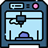

Sink Twice
A research through design product to help users saving, reusing water in the home.
Problem Statement
- Global Water Scarcity
- Water wastage in German Household
- Behavioural Prototype
My Role
Concept mapping, Mind Mapping, Literature review, Design Thinking, Usability testing with interviews at users home, Sketch, Modeling, 3D printing, Website Design
| Team Size : Managed solo |
| Project type : University Summer project |
| Duration : 16 weeks |
| Supervised by : Dr. Matthias Laschke |
| Tools Used :

|
Design Process
User Research
The User Research was done through intensive literature surveys.
Problem Statement
- High water bill.
- Modern houses unequipped with sustainable water re-usable methods.
- Water re-usability unawareness.
- Fresh water wastage concern.
- Costly equipment's for water sustainability.
Research and Analysis
Concept Map
The concept was very large with many data. Concept helped to empathize with different user and their use cases related to water usage in a home. I belong to developing country and can empathize with water issues but thinking from a German user perspective was very difficult where I as a researcher talked with many German and people from developed countries and what they think about repurposing the water which they have used once.
Mind Mapping
The Sink Twice has various uses but to understand for typical usage in Kitchen. Mind mapping helped me to visualize the problem and create better infographics for the users
Design and Prototype
Cardboard Prototype
Sketching in paper gave a bit visualization. Due to inclination in the design the stability was a challenge as the user will keep the sink over outside of the sink maybe empty or filled with water.
Rescaled Prototype
The cardboard prototype after reaching a satisfactory stage curated in Fusion 360. I had access to Fab Lab Siegen where most of the modelling was done. I rescale the design and 3D print it to check the density of the model.
Re-iterate the Lo-Fi prototype
The stopper was of no use and it was damaging the fluency. During the design Iteration without Usability testing I took a decision to remove the stopper.
Addition of Infographics
Infographics are added to the sink twice. Even a website is made to put all the product information. Check the link above for the site
Usability Testing
Pre Evaluation : Survey
There was constraint of budget and time. The test was done by sending a survey in our class student group. This survey had question asking basic user information and their interest in sustainability, saving water. Total 9 users replied and only 5 users were selected based on the availability and interest to be part of this experiment. Every selected user had 7 days to use the product.
Post Evaluation : Structured Interview Guidelines
The five users were interviewed after every user have used the Sink Twice for seven days in their home. After the seventh day I visit their home and interviewed them based on this questions.
User Findings
- Various purposes of Sink twice by users.
- Conscious perception of water wastage and immediate practices
- The application as alarm, reminder, and trigger
- Stimulation of moral reflections
- Affordance
- More motivations beyond sustainability of water usage practices
- Hygiene involved with water re-usability
- Ideas for improvements: Scalable design for different washbasin types, faucets to take water from Sink Twice basin.
- User suggestion in info graphics: Projection of positive effort from users through hologram on wall
Reflections
- This is my first time doing Interaction design so lot of time went in learning tools like FLM printer, Autodesk Fusion 360.
- Usability testing was very insightful gave me full understanding about the design and problem.
- Somehow the interview with my users gave me lot of ideas for future iteration and missing part in the project.
- The product had a missing factor like automation.
- Future iteration in the project we will attach flowmeter and LED or Holographic projection to better inform the user about the water usage.
Further Development
Presented a short paper in InfraHealth Conference September 2023.